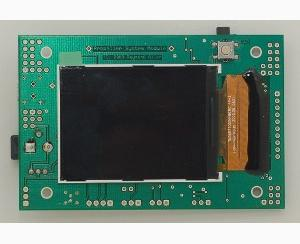
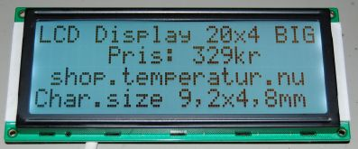
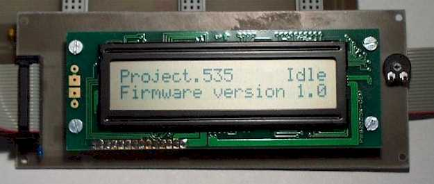

A weblog focused on interesting circuits, ideas, schematics and other information about microelectronics and microcontrollers.
E-books
Disclaimer
Because I have not tested all electronic circuits mentioned on this pages, I cannot attest to their accuracy; therefore, I do not provide a warranty of any kind and cannot be held responsible in any manner.
display
TV Text display with ATMega168
27. February 2010 - 16:15 — adminTV display based on AVR ATMega168 by Ben Ryves.
 Photo by Ben Ryves
Photo by Ben Ryves
Propeller-based LCD module
11. December 2009 - 19:48 — adminI think it's not only the LCD module, but a good Propeller dev kit.

(Source: GadgetGangster web)
Tachometer with a LCD from Nokia 5110
28. November 2009 - 2:26 — adminTen years ago was Nokia 5110 The Big Cellphone. Here is an useful recycling: Digital tachometer with a 5110 LCD.

(Source: Elfly.pl)
Color LCD + touchscreen module by GadgetGangster
19. November 2009 - 0:17 — adminI like a Parallax Propeller MCU, it's a really neat hack. And I've found the ultimate source of miscellaneous accessories for Propeller, and much more...

(Picture: Gadget Gangster web)
FPGA Interfacing of LCD module
21. October 2009 - 21:01 — adminThis project is about interfacing a typical HD44780 Text LCD to an FPGA using delay elements with a Finite State Machine (FSM).

LCD display module
21. October 2009 - 17:47 — adminLCD aplhanumeric modules are good available and it's simply to use them. Here are some tips and ideas.

Etch-a-sketch on AVR and Nokia 3310 LCD
22. March 2009 - 12:53 — adminIR-controlled Etch-a-Sketch based on Atmel ATMega8 and Nokia 3310 LCD.

AVR library for Nokia color LCD
19. March 2009 - 19:19 — adminAnother Nokia LCD Driver for 4096 Colors.

Text video display for 8bit computer
31. January 2009 - 15:33 — adminA simple and handy 40x25 monochrome text display you can attach to your 8bit computer (based on Z80, 6502 etc.) as I/O device with parallel data bus.
SoftVGA - an AVR VGA display
26. January 2009 - 21:37 — adminVGA signal generator and display based on ATMega32.